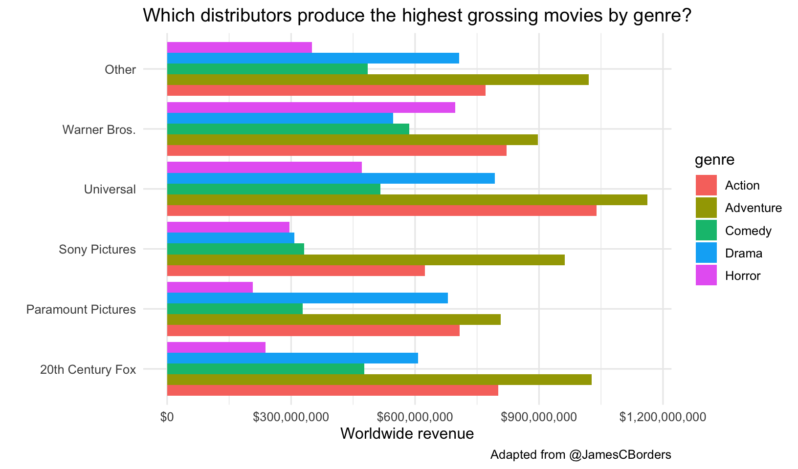

This is a refresher class designed to be completed after completing the following lessons:
The data and analyses here were inspired by the Tidy Tuesday project – a weekly social data project in R from the R for Data Science online learning community @R4DScommunity.
We’re going to use two different data sets. One containing data on movie budgets and profits that was featured in a FiveThirtyEight article on horror movies and profits, and another with data on college majors and income from the American Community Survey.
Packages needed for this analysis are loaded below. If you don’t have one of these packages installed, simply install it once using install.packages("PackageName"). A quick note on the tidyverse package (https://www.tidyverse.org/): the tidyverse is a collection of other packages that are often used together. When you install or load tidyverse, you also install and load all the packages that we’ve used previously: dplyr, tidyr, ggplot2, as well as several others. Because we’ll be using so many different packages from the tidyverse collection, it’s more efficient load this “meta-package” rather than loading each individual package separately.
library(tidyverse)
library(ggrepel)
library(scales)
library(lubridate)I’ll demonstrate some functionality from these other packages. They’re handy to have installed, but are not strictly required.
library(plotly)
library(DT)The raw data can be downloaded here: movies.csv.
This data was featured in the FiveThirtyEight article, “Scary Movies Are The Best Investment In Hollywood”.
"Horror movies get nowhere near as much draw at the box office as the big-time summer blockbusters or action/adventure movies – the horror genre accounts for only 3.7 percent of the total box-office haul this year – but there’s a huge incentive for studios to continue pushing them out.
The return-on-investment potential for horror movies is absurd. For example, “Paranormal Activity” was made for $450,000 and pulled in $194 million – 431 times the original budget. That’s an extreme, I-invested-in-Microsoft-when-Bill-Gates-was-working-in-a-garage case, but it’s not rare. And that’s what makes horror such a compelling genre to produce."
– Quote from Walt Hickey for fivethirtyeight article.
Data dictionary (data from the-numbers.com):
| Header | Description |
|---|---|
release_date |
month-day-year |
movie |
Movie title |
production_budget |
Money spent to create the film |
domestic_gross |
Gross revenue from USA |
worldwide_gross |
Gross worldwide revenue |
distributor |
The distribution company |
mpaa_rating |
Appropriate age rating by the US-based rating agency |
genre |
Film category |
If you haven’t already loaded the packages we need, go ahead and do that now.
library(tidyverse)
library(ggrepel)
library(scales)
library(lubridate)Now, use the read_csv() function from readr (loaded when you load tidyverse), to read in the movies.csv dataset into a new object called mov_raw.
mov_raw <- read_csv("data/movies.csv")
mov_rawLet’s clean up the data a bit. Remember, construct your pipeline one step at a time first. Once you’re happy with the result, assign the results to a new object, mov.
X1 Variable.worldwide_gross/production_budget.mov <- mov_raw %>%
select(-X1) %>%
mutate(release_date = mdy(release_date)) %>%
mutate(roi = worldwide_gross / production_budget) %>%
mutate(pct_domestic = domestic_gross / worldwide_gross) %>%
mutate(year = year(release_date)) %>%
mutate(month = month(release_date, label = TRUE)) %>%
mutate(day = wday(release_date, label = TRUE)) %>%
arrange(desc(release_date)) %>%
filter(worldwide_gross > 0) %>%
filter(!is.na(distributor)) %>%
filter(!is.na(mpaa_rating))
movLet’s take a look at the distribution of release date.
ggplot(mov, aes(year)) + geom_histogram(bins=40)There doesn’t appear to be much documented berfore 1975, so let’s restrict (read: filter) the dataset to movies made since 1975. Also, we’re going to be doing some analyses by year, and since the data for 2018 is still incomplete, let’s remove all of 2018. Let’s get anything produced in 1975 and after (>=1975) but before 2018 (<2018). Add the final filter statement to the assignment, and make the plot again.
mov <- mov_raw %>%
select(-X1) %>%
mutate(release_date = mdy(release_date)) %>%
mutate(roi = worldwide_gross / production_budget) %>%
mutate(pct_domestic = domestic_gross / worldwide_gross) %>%
mutate(year = year(release_date)) %>%
mutate(month = month(release_date, label = TRUE)) %>%
mutate(day = wday(release_date, label = TRUE)) %>%
arrange(desc(release_date)) %>%
filter(worldwide_gross > 0) %>%
filter(!is.na(distributor)) %>%
filter(!is.na(mpaa_rating)) %>%
filter(year>=1975 & year <2018)
movWhich days are movies released on? The dplyr count() function counts the number of occurances of a particular variable. It’s shorthand for a group_by() followed by summarize(n=n()). The geom_col() makes a bar chart where the height of the bar is the count of the number of cases, y, at each x position. Feel free to add labels if you want.
mov %>%
count(day, sort=TRUE) %>%
ggplot(aes(day, n)) +
geom_col() +
labs(x="", y="Number of movies released",
title="Which days are movies released on?",
caption="Adapted from @jaseziv") +
theme_classic()EXERCISE 1
Does the day a movie is release affect revenue? Make a boxplot showing the worldwide gross revenue for each day.
What about month? Just swap day for month in the code.
mov %>%
ggplot(aes(month, worldwide_gross)) +
geom_boxplot(col="gray10", fill="gray90") +
scale_y_log10(labels=dollar_format()) +
labs(x="Release month",
y="Worldwide gross revenue",
title="Does the day a movie is release affect revenue?",
caption="Adapted from @jaseziv") +
theme_classic()We could also get a quantitative look at the average revenue by day using a group-by summarize operation:
mov %>%
group_by(day) %>%
summarize(rev=mean(worldwide_gross))## # A tibble: 7 x 2
## day rev
## <ord> <dbl>
## 1 Sun 70256412.
## 2 Mon 141521289.
## 3 Tue 177233110.
## 4 Wed 130794183.
## 5 Thu 194466996.
## 6 Fri 90769834.
## 7 Sat 89889497.It looks like summer months and holiday months at the end of the year fare well. Let’s look at a table and run a regression analysis.
mov %>%
group_by(month) %>%
summarize(rev=mean(worldwide_gross))mov %>%
mutate(month=factor(month, ordered=FALSE)) %>%
lm(worldwide_gross~month, data=.) %>%
summary()What does the worldwide movie market look like by decade? Let’s first group by year and genre and compute the sum of the worldwide gross revenue. After we do that, let’s plot a barplot showing year on the x-axis and the sum of the revenue on the y-axis, where we’re passing the genre variable to the fill aesthetic of the bar.
mov %>%
group_by(year, genre) %>%
summarize(revenue=sum(worldwide_gross)) %>%
ggplot(aes(year, revenue)) +
geom_col(aes(fill=genre)) +
scale_y_continuous(labels=dollar_format()) +
labs(x="", y="Worldwide revenue", title="Worldwide Film Market by Decade")Which distributors produce the highest grossing movies by genre? First let’s lump all distributors together into 5 major distributors with the most movies, lumping all others into an “Other” category. The fct_lump function from the forcats package (loaded with tidyverse) will do this for you. Take a look at just that result first. Then let’s plot a geom_col(), which plots the actual value of the thing we put on the y-axis (worldwide gross revenue in this case). Because geom_col() puts all the values on top of one another, the highest value will be the one displayed. Let’s add position="dodge" so they’re beside one another instead of stacked. We can continue to add additional things to make the plot pretty. I like the look of this better when we flip the coordinate system with coord_flip().
mov %>%
mutate(distributor=fct_lump(distributor, 5)) %>%
ggplot(aes(distributor, worldwide_gross)) + geom_col(aes(fill=genre), position="dodge") +
scale_y_continuous(labels = dollar_format()) +
labs(x="",
y="Worldwide revenue",
title="Which distributors produce the highest grossing movies by genre?",
caption="Adapted from @JamesCBorders") +
coord_flip()
It looks like Universal made the highest-grossing action and adventure movies, while Warner Bros made the highest grossing horror movies.
But what about return on investment?
mov %>%
group_by(genre) %>%
summarize(roi=mean(roi))## # A tibble: 5 x 2
## genre roi
## <chr> <dbl>
## 1 Action 2.82
## 2 Adventure 3.60
## 3 Comedy 3.48
## 4 Drama 3.40
## 5 Horror 11.2It looks like horror movies have overwhelmingly the highest return on investment. Let’s look at this across the top distributors.
EXERCISE 2
Modify the code above to look at return on investment instead of worldwide gross revenue.
Let’s make a scatter plot showing the worldwide gross revenue over the production budget. Let’s make the size of the point relative to the ROI. Let’s add a “breakeven” line that has a slope of 1 and a y-intercept of zero. Let’s facet by genre.
mov %>%
ggplot(aes(production_budget, worldwide_gross)) +
geom_point(aes(size = roi)) +
geom_abline(slope = 1, intercept = 0, col = "red") +
facet_wrap( ~ genre) +
scale_x_log10(labels = dollar_format()) +
scale_y_log10(labels = dollar_format()) +
theme(axis.text.x = element_text(angle = 45, hjust = 1)) +
labs(x = "Production Budget",
y = "Worldwide gross revenue",
size = "Return on Investment")Generally most of the points lie above the “breakeven” line. This is good – if movies weren’t profitable they wouldn’t keep making them. Proportionally there seem to be many more larger points in the Horror genre, indicative of higher ROI.
Let’s create a faceted grid showing distributor by genre. Paramount and Other distributors have the largest share of low-budget high-revenue horror films.
mov %>%
mutate(distributor = fct_lump(distributor, 5)) %>%
ggplot(aes(production_budget, worldwide_gross)) +
geom_point(aes(size = roi)) +
geom_abline(slope = 1, intercept = 0) +
facet_grid(distributor ~ genre) +
scale_x_log10(labels = dollar_format()) +
scale_y_log10(labels = dollar_format()) +
theme(axis.text.x = element_text(angle = 45, hjust = 1)) +
labs(x = "Production Budget",
y = "Worldwide gross revenue",
size = "Return on Investment")What were those super profitable movies? Looks like they’re mostly horror movies. One thing that’s helpful to do here is to make movies a factor variable, reordering its levels by the median ROI. Look at the help for ?fct_reorder for this. I also like to coord_flip() this plot.
mov %>%
arrange(desc(roi)) %>%
head(20) %>%
mutate(movie=fct_reorder(movie, roi)) %>%
ggplot(aes(movie, roi)) +
geom_col(aes(fill=genre)) +
labs(x="Movie",
y="Return On Investment",
title="Top 20 most profitable movies",
caption="Adapted from @DaveBloom11") +
coord_flip() +
geom_text(aes(label=paste0(round(roi), "x "), hjust=1), col="white")It might be informative to run the same analysis for movies that had either exclusive US distribution, or no US distribution at all. We could simply filter for movies with 100% of the revenue coming from domestic gross revenue US only, or 0% from domestic (no US distribution). Just add a filter statement in the pipeline prior to plotting.
mov %>%
filter(pct_domestic==1) %>%
arrange(desc(roi)) %>%
head(20) %>%
mutate(movie=fct_reorder(movie, roi)) %>%
ggplot(aes(movie, roi)) +
geom_col(aes(fill=genre)) +
labs(x="Movie",
y="Return On Investment",
title="Top 20 most profitable movies with US-only distribution",
caption="Adapted from @DaveBloom11") +
coord_flip() +
geom_text(aes(label=paste0(round(roi), "x "), hjust=1), col="white")mov %>%
filter(pct_domestic==0) %>%
arrange(desc(roi)) %>%
head(20) %>%
mutate(movie=fct_reorder(movie, roi)) %>%
ggplot(aes(movie, roi)) +
geom_col(aes(fill=genre)) +
labs(x="Movie",
y="Return On Investment",
title="Top 20 most profitable movies with no US distribution",
caption="Adapted from @DaveBloom11") +
coord_flip()What about movie ratings? R-rated movies have a lower average revenue but ROI isn’t substantially less. The n() function is a helper function that just returns the number of rows for each group in a grouped data frame. We can see that while G-rated movies have the highest mean revenue, there were relatively few of them produced, and had a lower total revenue. There were more R-rated movies, but PG-13 movies really drove the total revenue worldwide.
mov %>%
group_by(mpaa_rating) %>%
summarize(
meanrev = mean(worldwide_gross),
totrev = sum(worldwide_gross),
roi = mean(roi),
number = n()
)## # A tibble: 4 x 5
## mpaa_rating meanrev totrev roi number
## <chr> <dbl> <dbl> <dbl> <int>
## 1 G 189913348 13863674404 4.42 73
## 2 PG 147227422. 78324988428 4.64 532
## 3 PG-13 113477939. 120173136920 3.06 1059
## 4 R 63627931. 92451383780 4.42 1453Are there fewer R-rated movies being produced? Not really. Let’s look at the overall number of movies with any particular rating faceted by genre.
mov %>%
count(mpaa_rating, genre) %>%
ggplot(aes(mpaa_rating, n)) +
geom_col() +
facet_wrap(~genre) +
labs(x="MPAA Rating",
y="Number of films",
title="Number of films by rating for each genre")What about the distributions of ratings?
mov %>%
ggplot(aes(worldwide_gross)) +
geom_histogram() +
facet_wrap(~mpaa_rating) +
scale_x_log10(labels=dollar_format()) +
labs(x="Worldwide gross revenue",
y="Count",
title="Distribution of revenue by genre")mov %>%
ggplot(aes(mpaa_rating, worldwide_gross)) +
geom_boxplot(col="gray10", fill="gray90") +
scale_y_log10(labels=dollar_format()) +
labs(x="MPAA Rating", y="Worldwide gross revenue", title="Revenue by rating")But, dont be fooled. Yes, on average G-rated movies look to perform better. But there aren’t that many of them being produced, and they aren’t bringing in the lions share of revenue.
mov %>%
count(mpaa_rating) %>%
ggplot(aes(mpaa_rating, n)) +
geom_col() +
labs(x="MPAA Rating",
y="Count",
title="Total number of movies produced for each rating")mov %>%
group_by(mpaa_rating) %>%
summarize(total_revenue=sum(worldwide_gross)) %>%
ggplot(aes(mpaa_rating, total_revenue)) +
geom_col() +
scale_y_continuous(label=dollar_format()) +
labs(x="MPAA Rating",
y="Total worldwide revenue",
title="Total worldwide revenue for each rating")Look back at the dplyr reference on joins. An inner join lets you take two tables, match by a common column (or columns), and return rows with an entry in both, returning all columns in each table. I’ve downloaded all the data underlying IMDB (imdb.com/interfaces), and created a reduced dataset having ratings for all the movies in IMDB. Let’s join the movie data we have here with IMDB ratings. Download the data here: movies_imdb.csv. Once you’ve downloaded it, read it in with read_csv():
imdb <- read_csv("data/movies_imdb.csv")
imdbThere are 177,519 movies in this dataset. There are 3,117 movies in the data we’ve already been using. Let’s see how many we have that intersect in both:
movimdb <- inner_join(mov, imdb, by="movie")
movimdbIt turns out there are only 2,591 rows in the joined dataset. That’s because there were some rows in mov that weren’t in imdb, and vice versa. Some of these are truly cases where there isn’t an entry in one. Others are cases where it’s Star Wars Ep. I: The Phantom Menace in one dataset but Star Wars: Episode I - The Phantom Menace in another, or Mr. & Mrs. Smith versus Mr. and Mrs. Smith. Others might be ascii versus unicode text incompatibility, e.g. the hyphen “-” versus the endash, “–”.
Now that you have the datasets joined, try a few more exercises!
EXERCISE 3
## # A tibble: 4 x 3
## mpaa_rating meanimdb meanvotes
## <chr> <dbl> <dbl>
## 1 G 6.54 132015.
## 2 PG 6.31 81841.
## 3 PG-13 6.25 102740.
## 4 R 6.58 107575.## # A tibble: 5 x 3
## genre meanimdb meanvotes
## <chr> <dbl> <dbl>
## 1 Action 6.28 154681.
## 2 Adventure 6.27 130027.
## 3 Comedy 6.08 71288.
## 4 Drama 6.88 91101.
## 5 Horror 5.90 89890.## # A tibble: 5 x 3
## distributor meanimdb meanvotes
## <fct> <dbl> <dbl>
## 1 Paramount Pictures 6.44 130546.
## 2 Sony Pictures 6.25 111913.
## 3 Universal 6.44 130028.
## 4 Warner Bros. 6.37 133997.
## 5 Other 6.46 86070.movimdb %>%
filter(mpaa_rating=="PG", genre=="Horror") %>%
select(release_date, movie, worldwide_gross, imdb, votes)## # A tibble: 5 x 5
## release_date movie worldwide_gross imdb votes
## <date> <chr> <dbl> <dbl> <int>
## 1 2015-10-16 Goosebumps 158905324 6.3 67744
## 2 1983-06-24 Twilight Zone: The Movie 29500000 6.5 29313
## 3 1982-06-04 Poltergeist 121706019 7.4 124178
## 4 1978-06-16 Jaws 2 208900376 5.7 61131
## 5 1975-06-20 Jaws 470700000 8 492525method="lm".movimdb %>%
arrange(desc(votes)) %>%
head(10) %>%
select(release_date, movie, roi, imdb, votes)## # A tibble: 10 x 5
## release_date movie roi imdb votes
## <date> <chr> <dbl> <dbl> <int>
## 1 1994-09-23 The Shawshank Redemption 1.13 9.3 2009031
## 2 1999-10-15 Fight Club 1.55 8.8 1607508
## 3 1994-10-14 Pulp Fiction 26.6 8.9 1568242
## 4 1994-07-06 Forrest Gump 12.4 8.8 1529711
## 5 1999-03-31 The Matrix 7.13 8.7 1441344
## 6 2014-11-05 Interstellar 4.05 8.6 1221035
## 7 2005-06-15 Batman Begins 2.39 8.3 1149747
## 8 2009-08-21 Inglourious Basterds 4.53 8.3 1070753
## 9 1998-07-24 Saving Private Ryan 7.46 8.6 1058789
## 10 1993-12-15 Schindler's List 12.9 8.9 1036894No surprises there. These are some of the most universally loved films ever made. Interesting that the return on investment varies wildly (1.13x for the highest rated movie of all time, up to 26x for Pulp Fiction, which had to pay for an all-star cast).
movimdb %>%
filter(votes>50000) %>%
arrange(imdb) %>%
head(10) %>%
select(release_date, movie, roi, imdb, votes)## # A tibble: 10 x 5
## release_date movie roi imdb votes
## <date> <chr> <dbl> <dbl> <int>
## 1 2008-08-29 Disaster Movie 1.84 1.9 80918
## 2 2007-01-26 Epic Movie 4.34 2.3 96271
## 3 2006-02-17 Date Movie 4.26 2.8 53781
## 4 2011-11-11 Jack and Jill 1.91 3.3 68909
## 5 2004-07-23 Catwoman 0.821 3.3 98513
## 6 1997-06-20 Batman & Robin 1.91 3.7 212085
## 7 1997-06-13 Speed 2: Cruise Control 1.37 3.8 67296
## 8 1994-12-23 Street Fighter 2.84 3.8 58912
## 9 2015-02-13 Fifty Shades of Grey 14.3 4.1 269355
## 10 2010-07-01 The Last Airbender 2.13 4.1 133813Interesting that several of these having such terrible reviews still have fairly high return on investment (>14x for Fifty Shades of Grey!).
This is the data behind the FiveThirtyEight article, “The Economic Guide To Picking A College Major”.
Data Dictionary:
| Header | Description |
|---|---|
Rank |
Rank by median earnings |
Major_code |
Major code, FO1DP in ACS PUMS |
Major |
Major description |
Major_category |
Category of major from Carnevale et al |
Total |
Total number of people with major |
Sample_size |
Sample size (unweighted) of full-time, year-round ONLY (used for earnings) |
Men |
Male graduates |
Women |
Female graduates |
ShareWomen |
Women as share of total |
Employed |
Number employed (ESR == 1 or 2) |
Full_time |
Employed 35 hours or more |
Part_time |
Employed less than 35 hours |
Full_time_year_round |
Employed at least 50 weeks (WKW == 1) and at least 35 hours (WKHP >= 35) |
Unemployed |
Number unemployed (ESR == 3) |
Unemployment_rate |
Unemployed / (Unemployed + Employed) |
Median |
Median earnings of full-time, year-round workers |
P25th |
25th percentile of earnigns |
P75th |
75th percentile of earnings |
College_jobs |
Number with job requiring a college degree |
Non_college_jobs |
Number with job not requiring a college degree |
Low_wage_jobs |
Number in low-wage service jobs |
If you haven’t already loaded the packages we need, go ahead and do that now.
library(tidyverse)
library(ggrepel)
library(scales)
library(lubridate)Now, use the read_csv() function from readr (loaded when you load tidyverse), to read in the grads.csv dataset into a new object called grads_raw.
Read in the raw data.
grads_raw <- read_csv("data/grads.csv")
grads_rawNow clean it up a little bit. Remember, construct your pipeline one step at a time first. Once you’re happy with the result, assign the results to a new object, grads.
str_to_title() function from the stringr package, loaded with tidyverse.Major_category – make it a factor variable with levels ordered according to median income.pct_college, that’s the proportion of graduates employed in a job requiring a college degree. We’ll do some analysis with this later on to look at under-employment.grads <- grads_raw %>%
arrange(desc(Median)) %>%
mutate(Major = str_to_title(Major)) %>%
mutate(Major = fct_reorder(Major, Median)) %>%
mutate(Major_category = fct_reorder(Major_category, Median)) %>%
mutate(pct_college=College_jobs/(College_jobs+Non_college_jobs)) %>%
filter(!is.na(pct_college)) %>%
filter(!is.na(Total))
gradsLet’s start with an exercise.
EXERCISE 4
Remake table 1 from the FiveThirtyEight article.
select() function to get only the columns you care about.head(10) or tail(10) to show the first or last few rows. Major Major_category Total
1 Petroleum Engineering Engineering 2339
2 Mining And Mineral Engineering Engineering 756
3 Metallurgical Engineering Engineering 856
4 Naval Architecture And Marine Engineering Engineering 1258
5 Chemical Engineering Engineering 32260
6 Nuclear Engineering Engineering 2573
7 Actuarial Science Business 3777
8 Astronomy And Astrophysics Physical Sciences 1792
9 Mechanical Engineering Engineering 91227
10 Electrical Engineering Engineering 81527
Median
1 110000
2 75000
3 73000
4 70000
5 65000
6 65000
7 62000
8 62000
9 60000
10 60000 Major Major_category
1 Communication Disorders Sciences And Services Health
2 Early Childhood Education Education
3 Other Foreign Languages Humanities & Liberal Arts
4 Drama And Theater Arts Arts
5 Composition And Rhetoric Humanities & Liberal Arts
6 Zoology Biology & Life Science
7 Educational Psychology Psychology & Social Work
8 Clinical Psychology Psychology & Social Work
9 Counseling Psychology Psychology & Social Work
10 Library Science Education
Total Median
1 38279 28000
2 37589 28000
3 11204 27500
4 43249 27000
5 18953 27000
6 8409 26000
7 2854 25000
8 2838 25000
9 4626 23400
10 1098 22000If you have the DT package installed, you can make an interactive table just like the one in the FiveThirtyEight article.
library(DT)
grads %>%
select(Major, Major_category, Total, Median) %>%
datatable()Let’s continue with more exploratory data analysis (EDA). Let’s plot median income by the total number of majors. Is there a correlation between the number of people majoring in a topic and that major’s median income? The expand_limits lets you put $0 on the Y-axis. You might try making the x-axis scale logarithmic.
ggplot(grads, aes(Total, Median)) +
geom_point() +
geom_smooth(method="lm") +
expand_limits(y=0) +
scale_x_log10(label=scales::number_format()) +
scale_y_continuous(label=dollar_format()) +
labs(x="Total number of majors",
y="Median income",
title="Median income as a function of major popularity")You could run a regression analysis to see if there’s a trend.
lm(Median~(Total), data=grads) %>% summary()What categories of majors make more money than others? Let’s make a boxplot of median income by major category. Let’s expand the limits to include 0 on the y-axis, and flip the coordinate system.
grads %>%
ggplot(aes(Major_category, Median)) +
geom_boxplot(aes(fill = Major_category)) +
expand_limits(y = 0) +
coord_flip() +
scale_y_continuous(labels = dollar_format()) +
theme(legend.position = "none") +
labs(x="Major category",
y="Median income",
title="Median income by major category",
caption="Adapted from @drob")What about unemployment rates? Let’s to the same thing here but before ggplot’ing, let’s mutate the major category to relevel it descending by the unemployment rate. Therefore the highest unemployment rate will be the first level of the factor. Let’s expand limits again, and flip the coordinate system.
grads %>%
mutate(Major_category=fct_reorder(Major_category, -Unemployment_rate)) %>%
ggplot(aes(Major_category, Unemployment_rate, fill = Major_category)) +
geom_boxplot() +
expand_limits(y = 0) +
coord_flip() +
scale_y_continuous(labels = percent_format()) +
theme(legend.position = "none") +
labs(x="Major category",
y="Unemployment rate",
title="Unemployment rate by major category")Most of these make sense except for the high median and large variability of “Computers & Mathematics” category. Especially considering how these had the second highest median salary. Let’s see what these were. Perhaps it was the larger number of Computer and Information Systems, and Communication Technologies majors under this category that were dragging up the Unemployment rate.
grads %>%
filter(Major_category=="Computers & Mathematics") %>%
select(Major, Median, Sample_size, Unemployment_rate)EXERCISE 5
What about “underemployment?” Which majors have more students finding jobs requiring college degrees? This time make a boxplot of each major category’s percentage of majors having jobs requiring a college degree (pct_college). Do the same factor reordering.
What are the highest earning majors? First, filter to majors having at least 100 samples to use for income data. Try changing head(20) to tail(20) to get the lowest earners.
grads %>%
filter(Sample_size >= 100) %>%
head(20) %>%
ggplot(aes(Major, Median, color = Major_category)) +
geom_point() +
geom_errorbar(aes(ymin = P25th, ymax = P75th)) +
expand_limits(y = 0) +
scale_y_continuous(labels = dollar_format()) +
coord_flip() +
labs(title = "What are the highest-earning majors?",
subtitle = "Top 20 majors with at least 100 graduates surveyed.\nBars represent the 25th to 75th percentile.",
x = "",
y = "Median salary of gradates",
caption="Adapted from @drob")How do the top majors break down by gender? This plot first gets the top 20 most popular majors by total overall students. It reorders the “Major” variable by the total number of people taking it. It then gathers the “Men” and “Women” variable into a column with the number of men or women, with a key column called “Gender” indicating whether you’re looking at men or women. It plots the total number in that major, and color-codes by gender.
grads %>%
arrange(desc(Total)) %>%
head(20) %>%
mutate(Major = fct_reorder(Major, Total)) %>%
gather(Gender, Number, Men, Women) %>%
ggplot(aes(Major, Number, fill = Gender)) +
geom_col() +
coord_flip() +
scale_y_continuous(labels=number_format()) +
labs(x="", y="Total number of majors", title="Gender breakdown by top majors")What do earnings look like by gender? Let’s plot median salary by the Share of women in that major, making the size of the point proportional to the number of students enrolled in that major. Let’s also lump all the major categories together if they’re not one of the top four. I’m also passing the label= aesthetic mapping. You’ll see why in a few moments. For now, there is no geom that takes advantage of the label aesthetic.
p <- grads %>%
mutate(Major_category = fct_lump(Major_category, 4)) %>%
ggplot(aes(ShareWomen, Median, label=Major)) +
geom_point(aes(size=Total, color=Major_category)) +
geom_smooth(method="lm") +
expand_limits(y=0) +
scale_size_continuous(labels=number_format()) +
scale_y_continuous(labels=dollar_format()) +
scale_x_continuous(labels=percent_format()) +
labs(x="Proportion of women with major",
title="Median income by the proportion of women in each major")
pIf you have the plotly package installed, you can make an interactive graphic. Try hovering over the points, or using your mouse to click+drag a box around a segment of the plot to zoom in on.
library(plotly)
ggplotly(p)Let’s run a regression analysis to see if the proportion of women in the major is correlated with salary. It looks like every percentage point increase in the proportion of women in a particular major is correlated with a $23,650 decrease in salary.
lm(Median ~ ShareWomen, data = grads, weights = Sample_size) %>%
summary()##
## Call:
## lm(formula = Median ~ ShareWomen, data = grads, weights = Sample_size)
##
## Weighted Residuals:
## Min 1Q Median 3Q Max
## -260544 -61278 -13324 33834 865216
##
## Coefficients:
## Estimate Std. Error t value Pr(>|t|)
## (Intercept) 52079 1441 36.15 <2e-16
## ShareWomen -23660 2410 -9.82 <2e-16
##
## Residual standard error: 123000 on 169 degrees of freedom
## Multiple R-squared: 0.363, Adjusted R-squared: 0.359
## F-statistic: 96.4 on 1 and 169 DF, p-value: <2e-16Let’s run a similar analysis looking at the median income as a function of the percentage of majors getting a job requiring a college degree.
grads %>%
mutate(Major_category = fct_lump(Major_category, 4)) %>%
ggplot(aes(pct_college, Median)) +
geom_point(aes(size=Total, col=Major_category)) +
geom_smooth() +
scale_x_continuous(label=percent_format()) +
scale_y_continuous(label=dollar_format()) +
scale_size_continuous(label=number_format()) +
expand_limits(y=0) +
labs(x="% of Major's Grads Employed in Jobs Requiring a College Degree",
y="Median salary",
title="Median income by percent with jobs requiring a college degree",
caption="Adapted from @backerman150")Here’s Table 2 in the FiveThirtyEight piece. It uses the mutate_at function to run an arbitrary function on any number of variables defined in the vars() function. See the help for ?mutate_at to learn more.
library(DT)
grads %>%
select(Major, Total, Median, P25th, P75th, Part_time, Non_college_jobs, Low_wage_jobs) %>%
mutate_at(vars(Part_time, Non_college_jobs, Low_wage_jobs), funs(percent(./Total))) %>%
mutate_at(vars(Median, P25th, P75th), funs(dollar)) %>%
datatable()